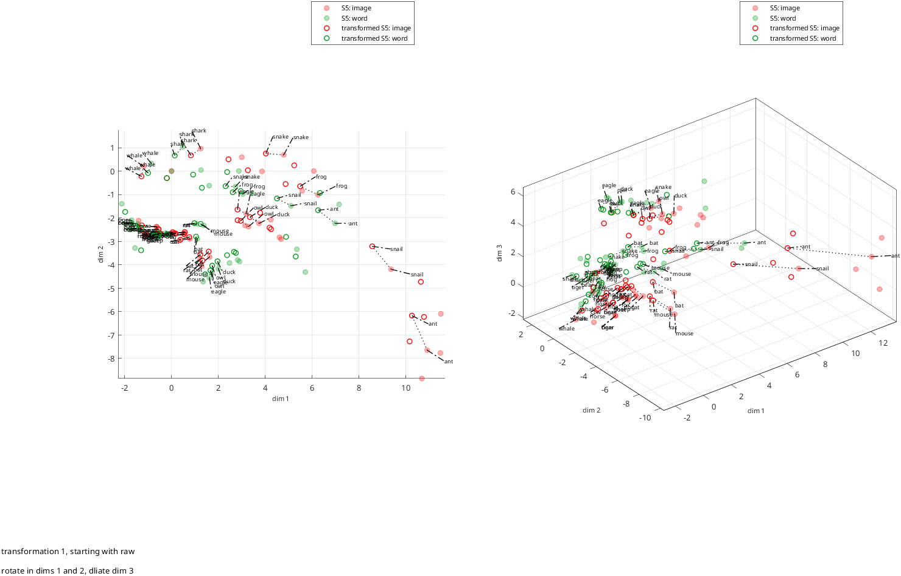
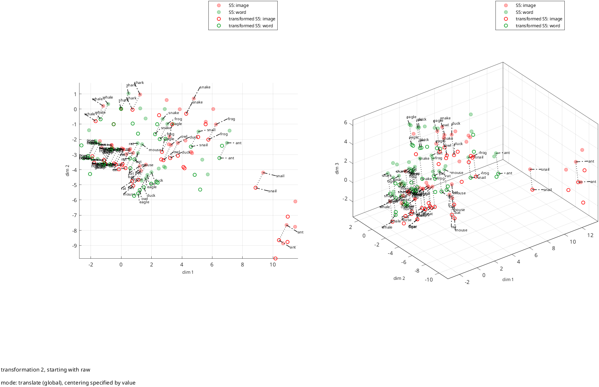
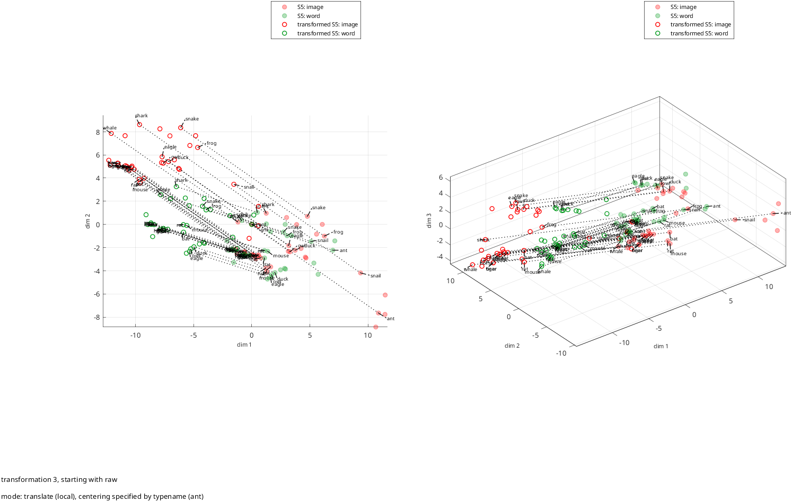
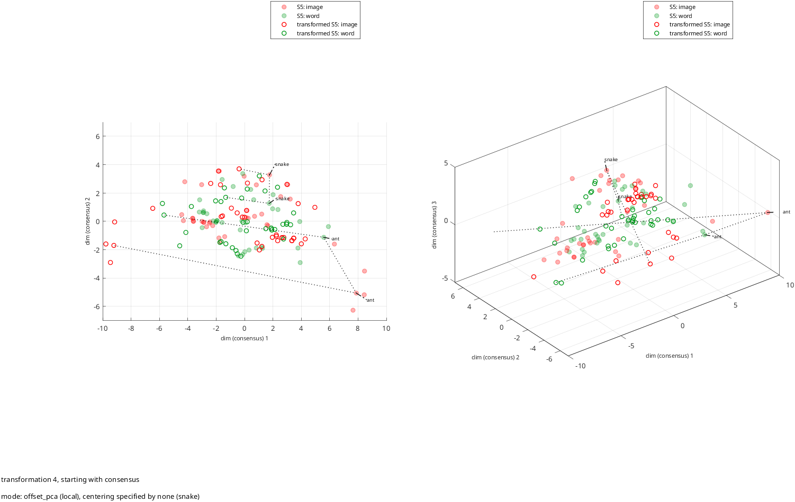
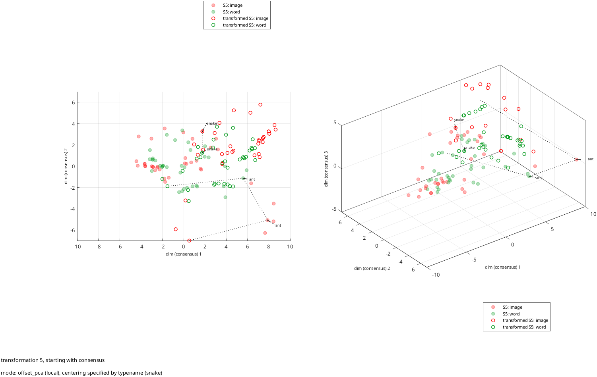
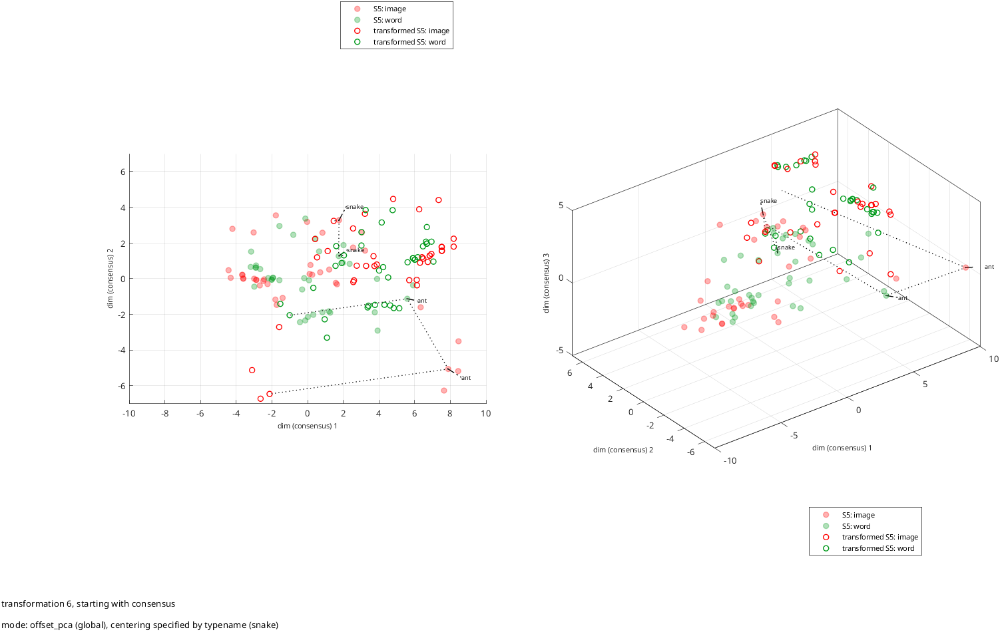
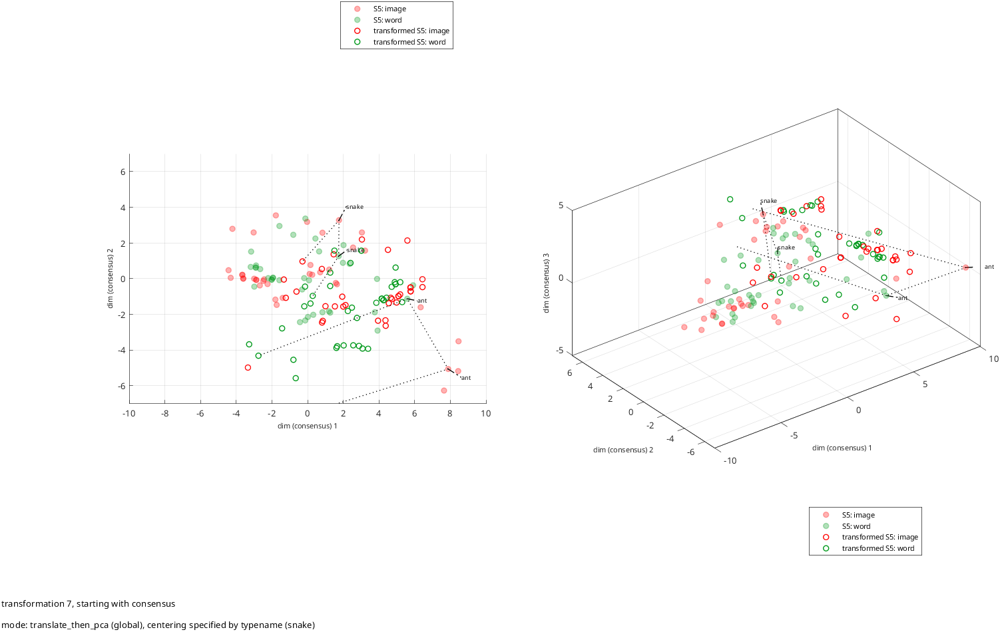
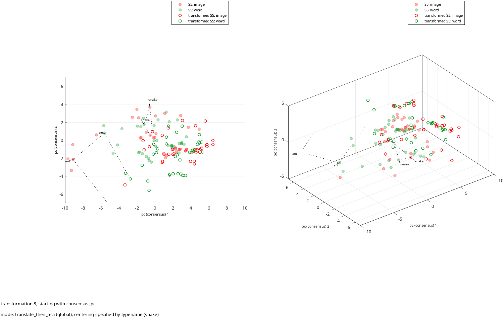

Demonstrate specification and application of simple linear transformations
plot options illustrated:
choice of dimension and coordinates to plot
several plots into same figure
custom arrangement of subplots
custom colors for data points
custom marker sizes for points
custom symbol choice
custom symbol fills
custom alpha blending
custom axis labels
custom axis ranges
custom labeling of datasets based on subject ID and paradigm name
callouts for stimulus label
selection of data points to label based on length of stimulus name
custom choice of data points to connect between sets
custom line style and color for connections between sets
rotation of raw data coordinates into a consensus
Also illustrates:
silencing logging for rs_[get|align|knit]_coordsets,
saving intermediate results from alignment so that alignment is not repeated by rs_knit_coordsets
See also: rs_xform_specify, rs_xform_apply, rs_disp_coorddsets
section to force btc defaults, even if rs_aux_defaults.mat has been created or modified
if ~exist('aux_force_filename') aux_force_filename='rs_aux_defaults_btc.mat'; end
auxs_force=struct;
opts_needed={'opts_read','opts_rays','opts_check','opts_align','opts_qpred','opts_knit','opts_xform','opts_disp'};
for k=1:length(opts_needed)
auxs_force.(opts_needed{k})=rs_aux_force(opts_needed{k},[],aux_force_filename);
end
filenames={'./samples/animals/image_coords_S5','./samples/animals/word_coords_S5'};
nsets=length(filenames);
aux_in=auxs_force;
aux_in.opts_read=setfields(aux_in.opts_read,{'input_type','if_auto','if_log'},{1,1,0});
aux_in.nsets=nsets;
raw dataset
[data_read,aux_read]=rs_get_coordsets(filenames,aux_in);
Output:
##### rs_warning: cannot find stimulus coordinates, so cannot identify rays
##### rs_warning: cannot find stimulus coordinates, so cannot identify rays
align data
aux_align_def=auxs_force.opts_align;
aux_align_def.opts_align.if_log=0; [data_align,aux_align]=rs_align_coordsets(data_read,aux_align_def);
Output:
##### rs_warning: cannot find stimulus coordinates, so cannot identify rays
##### rs_warning: cannot find stimulus coordinates, so cannot identify rays
keep intermediate results from alignment so that alignment isn't redone
aux_knit_def=auxs_force.opts_knit;
aux_knit_def.data_align=data_align;
aux_knit_def.sa_pooled=aux_align.sa_pooled;
aux_knit_def.opts_knit.if_log=0; [data_consensus,aux_knit]=rs_knit_coordsets(data_align,aux_knit_def);
aux_knit_pc=aux_knit_def;
aux_knit_pc.opts_knit.if_pca=1;
Output:
##### rs_warning: cannot find stimulus coordinates, so cannot identify rays
rotate to consensus and pc rotation
[data_consensus_pc,aux_knit_pc]=rs_knit_coordsets(data_align,aux_knit_pc);
Output:
##### rs_warning: cannot find stimulus coordinates, so cannot identify rays
set_labels=cell(1,2*nsets); for iset=1:nsets
set_labels{iset}=cat(2,data_read.sets{iset}.subj_id,': ',data_read.sets{iset}.paradigm_name);
set_labels{nsets+iset}=cat(2,'transformed ',set_labels{iset});
end
label the stimuli with short names
label_maxlength=5; data_label_list=[];
nstims=data_align.sas{1}.nstims;
for istim=1:nstims
if length(data_align.sas{1}.typenames{istim})<=label_maxlength
data_label_list(end+1)=istim;
end
end
dlist=[2 3]; nds=length(dlist);
data_start={'raw','raw','raw','consensus','consensus','consensus','consensus','consensus_pc'};
nxforms=length(data_start);
aux_outs=cell(2,nds,nxforms);
xform=cell(1,nxforms);
aux_spec_outs=cell(1,nxforms);
aux_xform_outs=cell(1,nxforms);
data_xform=cell(1,nxforms);
for ixform=1:nxforms
switch data_start{ixform}
case 'raw'
data_use=data_align; axis_label_prefix='dim';
case 'consensus'
data_use=aux_knit.components;
axis_label_prefix='dim (consensus)';
case 'consensus_pc'
data_use=aux_knit_pc.components;
axis_label_prefix='pc (consensus)';
end
opts_xform=auxs_force.opts_xform;
switch ixform
case 1 opts_xform.mode=[];
xform{ixform}.pipeline=[];
ts=cell(1,3);
ts{2}.b=0.9;
ts{2}.T=[cos(0.1) sin(0.1);-sin(0.1) cos(0.1)];
ts{2}.c=[-.2 -.3];
ts{3}.b=0.7;
ts{3}.T=[cos(0.1) sin(0.1) 0;-sin(0.1) cos(0.1) 0;0 0 1.2]; ts{3}.c=[-.2 -.3 .5];
xform{ixform}.ts{1}=ts;
desc='rotate in dims 1 and 2, dliate dim 3';
case 2
opts_xform.mode='translate';
opts_xform.source='global';
opts_xform.centering_specifier='value';
opts_xform.centering_value=0.5*[1:10];
case 3
opts_xform.mode='translate';
opts_xform.source='local';
opts_xform.centering_specifier='typename';
opts_xform.centering_typename='ant';
case 4
opts_xform.mode='offset_pca';
opts_xform.source='local';
opts_xform.centering_specifier='none';
opts_xform.centering_typename='snake'; case 5
opts_xform.mode='offset_pca';
opts_xform.source='local';
opts_xform.centering_specifier='typename';
opts_xform.centering_typename='snake';
case 6
opts_xform.mode='offset_pca';
opts_xform.source='global';
opts_xform.centering_specifier='typename';
opts_xform.centering_typename='snake';
case {7,8}
opts_xform.mode='translate_then_pca';
opts_xform.source='global';
opts_xform.centering_specifier='typename';
opts_xform.centering_typename='snake';
end
specify the transformation
xform_name=sprintf('transformation %1.0f, starting with %s',ixform,data_start{ixform});
if isempty(xform{ixform})
[xform{ixform},aux_spec_outs{ixform}]=rs_xform_specify(data_use,setfield(auxs_force.opts_xform,'opts_xform',opts_xform));
desc=sprintf('mode: %s (%s), centering specified by %s',opts_xform.mode,opts_xform.source,opts_xform.centering_specifier);
if isfield(opts_xform,'centering_typename')
desc=cat(2,desc,sprintf(' (%s)',opts_xform.centering_typename));
end
end
[data_xform{ixform},aux_xform_outs{ixform}]=rs_xform_apply(data_use,xform{ixform},setfield(struct(),'opts_xform',auxs_force.opts_xform));
plot: top row is untransformed data, dims 2 and 3; bottom row is transfornmed data
hfig=figure;
haxes=cell(1,nds);
for id=1:nds
haxes{1,id}=subplot(1,nds,id);
end
opts_disp_init=auxs_force.opts_disp;
opts_disp_init.fig_handle=hfig;
opts_disp_init.fig_name=xform_name;
opts_disp_init.axis_label_prefix=axis_label_prefix;
opts_disp_init.set_labels=set_labels;
opts_disp_init.set_colors={'r',[0 0.6 0.1]'};
opts_disp_init.set_markers={'o'};
opts_disp_init.set_filled=[1 1 0 0]; opts_disp_init.set_alphas=[0.3 0.3 1 1]; opts_disp_init.set_markersizes=6;
opts_disp_init.data_label_method='list';
if strcmp(opts_xform.mode,'offset_pca') | strcmp(opts_xform.mode,'translate_then_pca') opts_disp_init.data_label_list=[1,strmatch(opts_xform.centering_typename,data_align.sas{1}.typenames,'exact')];
else
opts_disp_init.data_label_list=data_label_list;
end
opts_disp_init.data_label_font_size=7;
opts_disp_init.callout_amount=0.2;
opts_disp_init.connect_sets_data_method='labeled';
opts_disp_init.connect_sets_linestyles={':'};
opts_disp_init.connect_sets_color_mode='list';
opts_disp_init.connect_sets_colors='k';
if strcmp(data_start{ixform},'raw')
opts_disp_init.data_label_setsel_method='all';
opts_disp_init.connect_sets_method='list';
opts_disp_init.connect_sets_list=[1 3;2 4]; opts_disp_init.axis_range='tight';
else
opts_disp_init.data_label_setsel_method='list';
opts_disp_init.data_label_setsel_list=[1 2];
opts_disp_init.connect_sets_method='list';
opts_disp_init.connect_sets_list=[1 2;1 3;2 4]; opts_disp_init.axis_range='list';
opts_disp_init.axis_range_list=[-10 10;-7 7;-5 5]; end
data_disp=auxs_force.opts_disp;
data_disp.ds=[data_use.ds,data_xform{ixform}.ds];
data_disp.sas=[data_use.sas,data_xform{ixform}.sas];
data_disp.sets=[data_use.sets,data_xform{ixform}.sets];
for id=1:nds
opts_disp_init.axis_handles=haxes(1,id);
opts_disp_init.dim_select=dlist(id);
aux_outs{1,id,ixform}=rs_disp_coordsets(data_disp,setfield(struct,'opts_disp',opts_disp_init));
end
axes('Position',[0.01,0.03,0.01,0.01]);
text(0,0,desc,'Interpreter','none');
axis off
axes('Position',[0.01,0.06,0.01,0.01]);
text(0,0,xform_name,'Interpreter','none');
axis off
end







